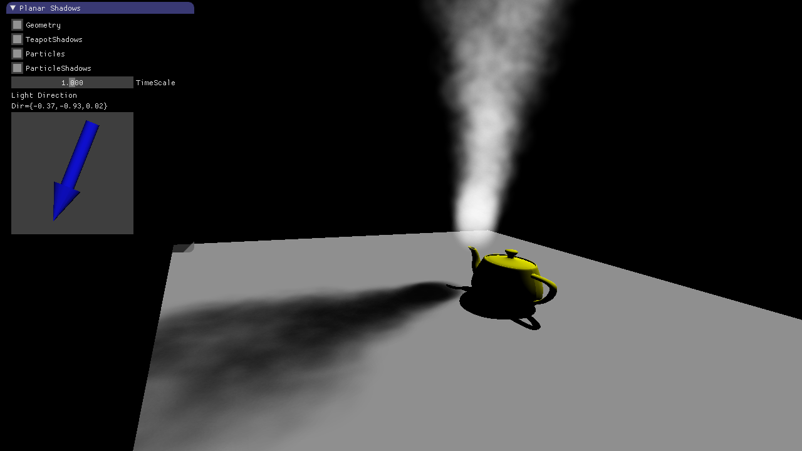

In this subtask you are asked to implement an orthogonal projection in 2D.
Assume that the camera is aligned with the global coordinate system.
The projection maps the 2D geometry onto a 1D line (the "image plane").
You have to implement Basic1_1.OrthogonalProjection2D(point2D).
As an argument, it gets a 2D point that has to be projected onto the image plane. The function returns the 1D coordinate on the image plane.
In this subtask you are asked to implement a perspective projection in 2D.
Assume that the camera is aligned with the global coordinate system.
The projection maps the 2D geometry onto a 1D line (the image plane).
You have to implement Basic1_2.PerspectiveProjection2D(eye, imagePlane, point2D).
In contrast to the previous assignment it also gets the position of the eye and the z component of the image plane.
Before projecting the point, you have to transform the point into camera space (origin is the eye position, axes are aligned to the world coordinate system).
The function returns the 1D coordinate on the image plane.
From the previous assignment you know how a perspective projection works. As you know from the lecture, a perspective projection can be easily applied using homogeneous coordinates.
In this subtask we have a freely movable camera.
You can use the left mouse button to set a new camera center (eye).
Using CTRL + mouse button you can change the point the camera looks at.
Your task is to implement the required methods to set up the camera matrix, the inverse camera matrix and the perspective transformation matrix
(have a look at the TODOs in Camera.update and mat3.perspective).
The camera matrix transforms a point from world space to camera space.
The inverse camera matrix transforms a point from camera space to world space.
Finally, you have to project a point given in world space coordinates to the canonical volume.
Therefore, you have to implement the function Camera.projectPoint.
In this task, you are asked to implement the 2D projection concept from the last task in 3D and set up a camera which projects the 3D space into 2D. The canvas below is split: On the left side, you can see the projection result, i.e. the image seen from the camera. On the right side, there is a debug view showing you both the observed scene (a colored cube in the middle of the coordinate system) and the frustum belonging to the camera.
The functions to be implemented are Camera3D.update and mat4.perspective, analogously to the two functions in
4.1c). Find the appropriate TODOs in the code and add code for the creation of the two matrices needed: First, set up the camera matrix in
Camera3D.update. Once you have completed this, you should see the camera frustum in the debug view on the right side.
The debug frustum is colored similarly to the cube in order to allow for better three-dimensional interpretation.
Second, set up the projection matrix in mat4.perspective. Once this matrix is correct, you should see the camera output in the view on the left side.
As soon as you have finished the creation of the two matrices, you can test the implementation through interaction. You can move the camera within bounds, using the keys W (move camera forwards), S (move camera backwards), A (turn camera to the left) and D (turn camera to the right). The camera is always oriented towards the origin and therefore towards the cube. The opening angle of the camera can be adjusted using the slider below the canvas. The debug camera remains static during all of these changes so you can observe the effects on the camera frustum.
In this task, you should implement correct alpha blending of the four colored circles you see below. The composed image should have a background of pure white, and the circles should be blended onto it from left to right (initial order: blue - red - yellow - green). You can alter the order of the circles and therefore of the blending process using drag-and-drop. The alpha values (ranging from $0$ to $1$, preset to $0.5$) can be modified using the sliders below the circle images.
Follow the instructions in the TODOs to implement the function doAlphaBlending() and fill the canvas below
the images with a blended version of the four circles. Note that, for every image, only the circle
and not its background should be blended, which is why it is transparent.
Transparency of background pixels is annotated with a zero alpha channel value which you will have to use in your implementation.
| $\alpha$: | $\alpha$: | $\alpha$: | $\alpha$: |
Once you are done, you can play around with the alpha values and the blending order to observe different effects. Note that you can also completely hide a circle by setting its alpha value to $0$.
In this exercise, your task is to implement planar shadows for opaque geometry (teapot) and semi-transparent particles (smoke). The basic algorithm for the scene seen below is:
Note that the particles are rendered after their shadows. This is required because the particles are blended on top of the current image without writing to the depth buffer. If we would switch it around the shadows would appear to be in front of the particles when looking from a certain angle. You can test this yourself after implementing this exercise by switching the draw order.
Subtasks a) and b) focus on planar shadow generation through vertex projection. The general idea is to render an object twice, once with the original color and vertex positions, and once in black with all vertices projected onto the ground plane.
Subtasks c) to g) address the creation of a simple particle system for steam rendering. The steam particles are quads which are always oriented to the camera (billboards) and display an animated noise function. The particles are rendered with alpha blending. The shadows of the particles are created like the teapot shadows by projecting the billboards onto the ground plane.

In the first subtask you have to implement the shadow of the teapot.
Right now you cannot see shadows when you check the corresponding checkbox in the GUI:
The teapot is already rendered a second time in black with projected vertices,
but so far, the projection in the method projectVertexToPlane of projection.glsl projects each vertex to the origin.
Change the method in order to project each vertex of the teapot mesh onto the ground plane according to the light direction.
The parameters for projectVertexToPlane are the vertex in world space, the light direction, and two parameters describing the plane pose in world space.
Once you have implemented the vertex projection correctly, you will see z-fighting of the shadow and the ground plane:
As they are both rendered at the same positions, either of them "wins" for each pixel due to floating-point imprecision in the depth values.
We could solve that by translating the shadow a constant distance of $\epsilon$ along the normal,
but the non-linearity in the depth buffer would either produce a "floating" shadow or not remove z-fighting at all, depending on the view distance.
That is why you should remove z-fighting with glPolygonOffset in CG::renderOpaqueGeometryShadows.
When you enable the particles right now they are rendered statically in the x-z plane. We want to transform them so that they are always oriented towards the camera. We achieve this in the following two steps:
The reason why this works is the following: When projecting the particles to view space (i.e. multiplying with the view matrix),
the rotational part is cancelled out and the particle is still in the x-y plane in view space.
The implemenation has to be done in CG::renderParticles.
In this subtask, particles are animated and resetted after a certain time span to create a continuous steam flow.
The implementation for this animation has to be done in CG::update.
First, have a look at struct Particle in cg.h.
In each timestep, the state of each particle has to be updated.
The positions of the particles are updated with explicit euler integration:
\[ p_{n+1} = p_{n} + v \Delta t \]
Once a particle is dead (lifetime < 0) it should be reset with the following properties:
position to particleStart. lifetime to a random value. timeoffset to a random value. velocity to a random multiple of planeNormal.
Before multiplying with a constant, offset it by adding a small random vector to create a 'cone like' emission behaviour. The random values should be chosen in a way that the steam looks 'cool' and similar to the image above.
At this point, the particles are still rendered as white squares.
The alpha value is already set in the fragment shader by a noise function, but it is not used while rendering.
Enable blending and set the correct blend function in CG::renderParticles.
The following blending behaviour should be met:
\[ C_{dst} = \alpha_{src} C_{src} + (1-\alpha_{src}) C_{dst} \]
with $\alpha_{src}$ being the alpha value of the particle, $C_{src}$ the particle RGB color, and $C_{dst}$ the current framebuffer color. This behaviour is implentend in OpenGL by using glBlendFunc with the arguments GL_SRC_ALPHA and GL_ONE_MINUS_SRC_ALPHA.
The particles are rendered as billboards which are oriented to the camera.
If we projected these billboards directly onto the plane, the shadows would change with viewing direction.
A better approach is to orient the particles towards the light in the shadow pass.
This can be achieved by creating an orthonormal basis from the light direction.
Implement mat3 orthonormalBasis(vec3 dir) in cg.cpp.
The orthonormal basis should be returned as a 3x3 matrix, with each column being one basis vector.
The third column v[2] should be the negative light direction.
The projected shadows of the particles will produce z-fighting and are rendered without alpha blending.
Add a polygon offset to the particle shadows and render them with alpha blending similar to the previous tasks.
Your implemention has to be done in CG::renderParticleShadows().